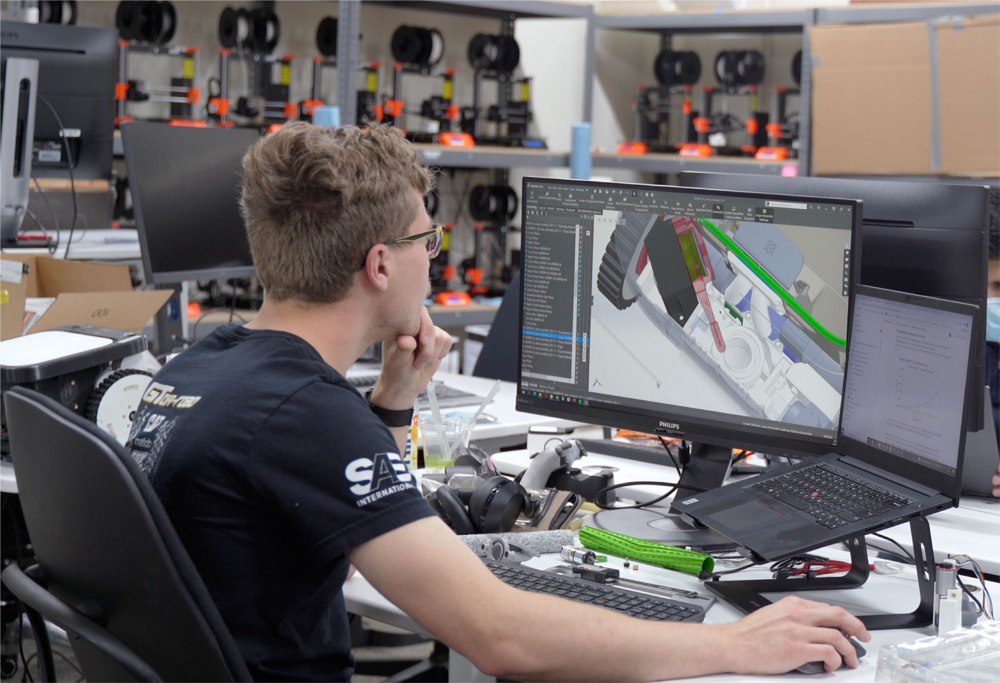

Building with purpose.
I'm Billy — engineer, tinkerer, and design obsessive. This is where I showcase projects, experiments, and career experience.

2025 – Present: NextMotion Inc.
- Led development of automation systems across multiple product lines Led development of automation systems across multiple product lines
- Supervised a team of 5 engineers
- Integrated real-time telemetry into embedded platforms
- Led development of automation systems across multiple product lines
- Supervised a team of 5 engineers
- Integrated real-time telemetry into embedded platforms
- Led development of automation systems across multiple product lines
- Supervised a team of 5 engineers
- Integrated real-time telemetry into embedded platforms

2023 – 2025: Graduate Researcher
- Focused on robotics and embodied intelligence
- Prototyped sensor-driven closed-loop control systems

2022: Open Source Development
- Built real-time motor control stack with ESP32 + Raspberry Pi
- Published working demos and documentation
2016: College
- Completed undergraduate studies in engineering
- Early projects in physical computing and data visualization